|
■若いときみたいに動けない…■
>中国さんは雑技団ばりに体柔らかかったりするんでしょうか
無茶なポーズ余裕でする中国さん見てみたいです
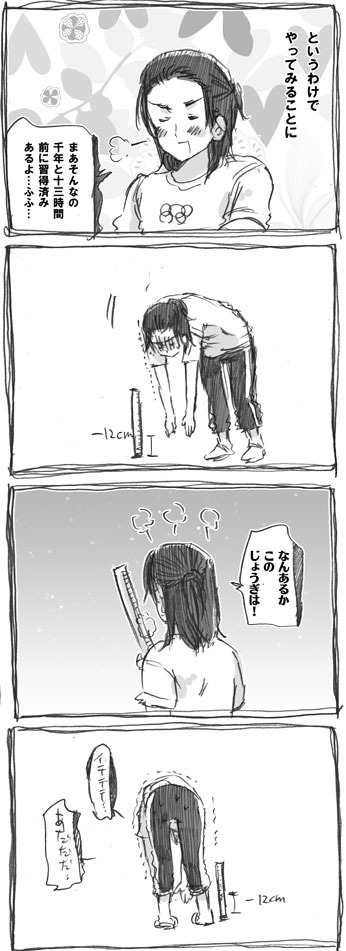
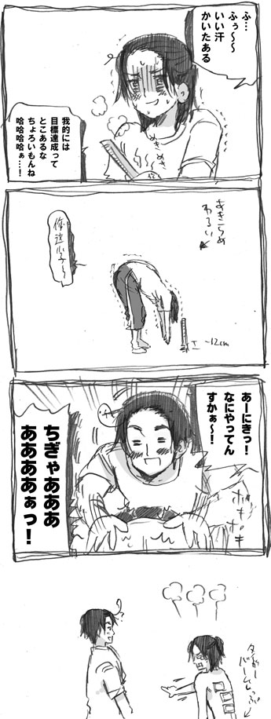
■ドイツとイタリアとキューベルワーゲン■
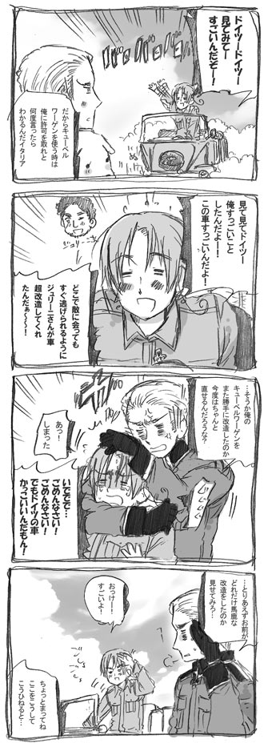
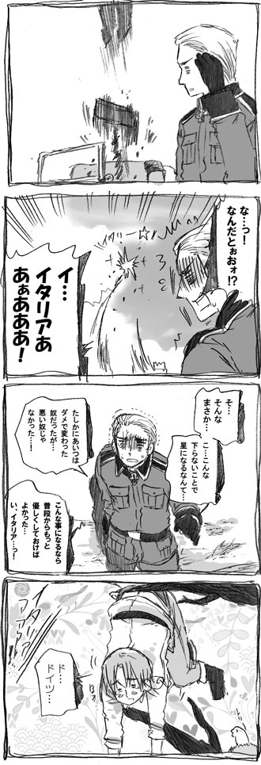
それから30分してそこら辺にいた人に助けられたそうです。
今日はサッカーに関するお話。
リヒテンシュタインサッカー連盟の
真ん中左下のバナーにときめきを隠せない。
■リヒテンシュタインVSイングランド■
２００３年３月２９日。世界で４番目に小さい国
リヒテンシュタインの小さなスタジアムで
EURO２００４年サッカー予選が行われていました。
それはリヒテンシュタインVSイングランドの試合前のこと。
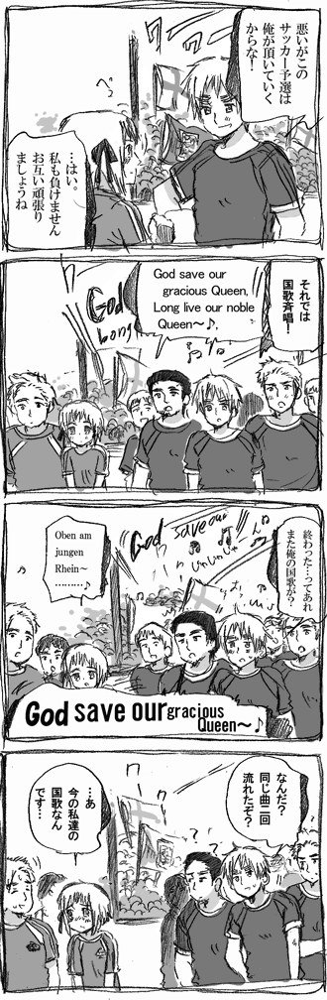
リヒテンシュタインとイギリスの国歌はメロディが一緒。
そのため、試合前の国歌斉唱で
「あれ？なんで同じ曲二回流すの？」とおもいつつ
イングランドが二回「女王陛下万歳」を高らかに
歌い上げてしまうという珍事が起きたそうです。
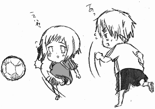
リヒテンシュタインは万年グループ最下位なんですが
（このEURO予選でもマケドニア相手に
頑張って一点入れたのが唯一の得点）
この対イングランド戦では相手になかなか点を入れさせず
堅実なプレーを見せたようです。
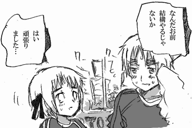
あと可愛いのが誰がベッカム氏とユニフォーム
交換するかでチーム内でもめたこと。
当のベッカム氏は
「警備心配だし(※1)リヒテンシュタインでやりたくないな」
と漏らしたこともあり結構迷惑顔だったようです。
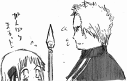
頑張れリヒテンシュタイン。
※１ リヒテンシュタインは軍隊がない。警察は70人ほど。
■ゆるゆる日本大フンドー■
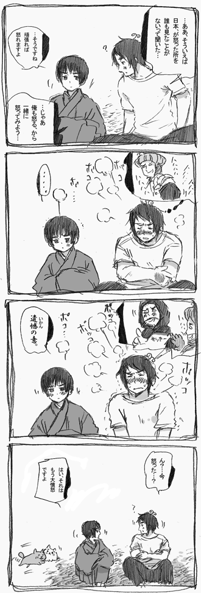
2コマ目。
■ゆるゆる日本大フンドー２■
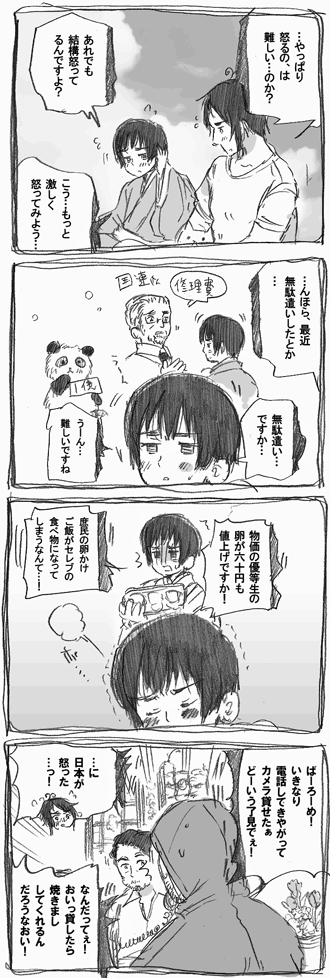
普段は温厚だが、食べ物の事になると容赦しないぞ。
４コマ目はトルコさんです。
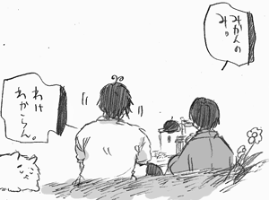
■言い訳■
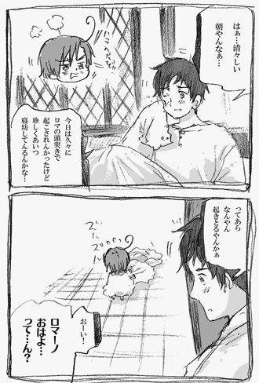
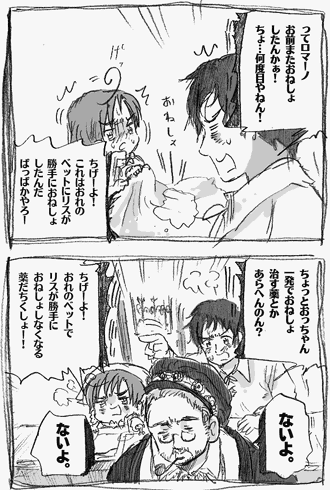
イタリア人の言い訳がかわいすぎる。
■エグゼクティブ三月革命■
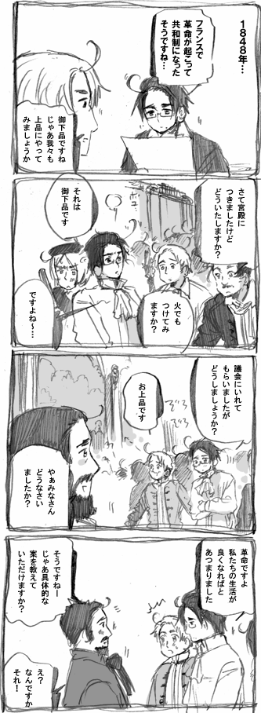
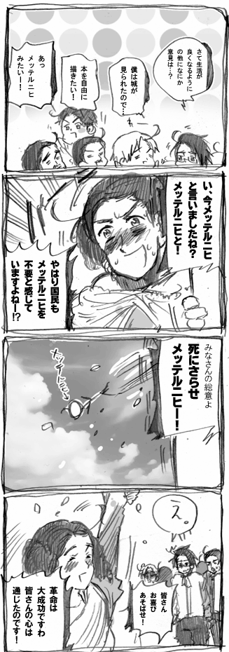
なんだこの切ない革命。
【１８４８年革命】
ヨーロッパ中を巻き込んだ革命の嵐。
【三月革命】
ウィーンでも一応あったが、フランスがやってるし
今生活苦しいし、じゃあ革命すっかって感じで
始まった切ない三月革命。
【ゾフィー】
上のメッテルニヒぶん投げてるオーストリア大公妃。
ゾフィー・フリーデリケ・ドロテア・ヴィルヘルミーネ・
フォン・バイエルンさん。
この革命が起こったおかげで国民の総意という大義名分の元
宮廷ででかい顔してた浪費家メッテルニヒを
追い出すことに成功した。
歴史的ないじわる姑としても有名ですが
実際は彼女も色々大変だったようです。
【メッテルニヒ】
クレメンス・ヴェンツェル・ロタール・ネーポムク・
フォン・メッテルニヒさん。
外交の天才で色男のオーストリアの宰相（ドイツ人）。
メッテルニヒさんは浪費家でしたが
（ナポレオン妹を元気づけるために別荘プレゼントなど）
とても頭がよく外交面でも才能を発揮していたので
彼を追い出した後のオーストリアは誰が何をしていいのか
みんな良く分からず上も下もカオスな状態になりました。
人一人いなくなっただけで、皆おろおろする
オーストリア、すごい国です。
オーストリア国内はこんな感じでしたが
イタリアとはクストッツァで雨の中
死闘を繰り広げることになります。
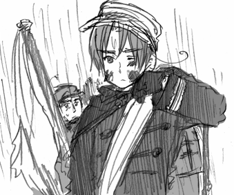
■まとまりのないバルト三国■
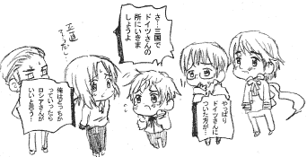
そういえばバルト三国は長い歴史の中でも
まとまった時期ってソ連からの独立くらいで
WW２の時もドイツにつくかロシアにつくかで
仲間割れしてたみたいですね。
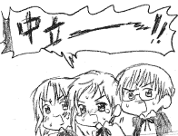
結局中立に回ったものの…
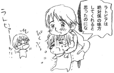
両方から攻められるという最悪の事態になりました。

|